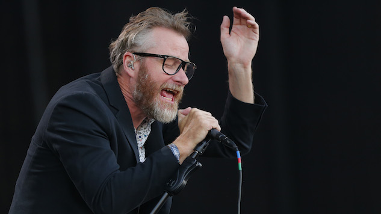

The National is an American rock band from Cincinnati, Ohio, formed in 1999. The band consists of Matt Berninger (vocals), Aaron Dessner (guitar, keyboards), Bryce Dessner (guitar), Scott Devendorf (bass) and Bryan Devendorf (drums).
Founded by Berninger, Aaron Dessner, and Scott and Bryan Devendorf, The National released their self-titled debut album, The National (2001), on Brassland Records, an independent record label founded by Dessner and his twin brother, Bryce Dessner. Bryce, who had assisted in recording the album, soon joined the band, participating as a full member in the recording of its follow-up, Sad Songs for Dirty Lovers (2003).
Leaving behind their day jobs, the National signed with Beggars Banquet Records and released their third studio album, Alligator (2005), to widespread critical acclaim. The band's fourth and fifth studio albums, Boxer (2007) and High Violet (2010), increased their exposure significantly. In 2013, the band released its sixth studio album, Trouble Will Find Me, which was nominated for Best Alternative Music Album at the 56th Annual Grammy Awards. In 2017 the band released the album Sleep Well Beast, which won the Grammy award for Best Alternative Music Album at the 60th Annual Grammy Awards.